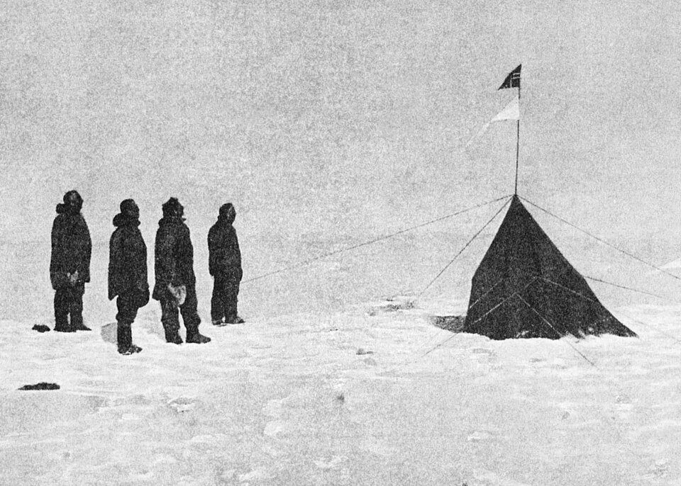

Cinco noruegos y una bandera: Amundsen alcanza el Polo Sur
Tras cincuenta y seis días de marcha en trineo desde la Barrera de Ross, Roald Amundsen y cuatro compañeros plantaron el pabellón de Noruega en el punto exacto donde todos los meridianos se juntan. Del capitán Scott, que corre hacia el mismo blanco por otra ruta, no hay noticia alguna.

A las tres de la tarde de hoy, sobre una llanura de hielo que no termina en ninguna dirección, cinco hombres detuvieron sus trineos, verificaron dos veces sus instrumentos y clavaron juntos un asta con la bandera de Noruega: Roald Amundsen quiso que Bjaaland, Hanssen, Hassel y Wisting la empuñaran con él, porque la jornada era de todos. Habían salido de su cuartel de Framheim, en la Barrera de Ross, hace cincuenta y seis días. El paraje, a casi diez mil pies de altura y con más de veinte grados bajo cero, fue bautizado llanura del Rey Haakon VII. No hay allí nada que ver, y por eso mismo el mundo entero lo miraba.
La expedición llegó al sur por un rodeo que ya es materia de polémica. Amundsen había anunciado que llevaría el Fram, el célebre buque de Nansen, a la conquista del Polo Norte; cuando los americanos Cook y Peary proclamaron, cada uno por su lado, haberlo alcanzado, cambió de blanco en secreto para no perder patrocinadores ni tiempo. Ni su tripulación lo supo hasta alta mar, y el capitán Scott, que preparaba desde hacía años el asalto británico al Polo Sur, se enteró por un telegrama lacónico despachado desde Madeira: «Me permito informarle que el Fram se dirige a la Antártida». La carrera quedó lanzada en ese instante.
El noruego ganó con perros, esquíes y aritmética. Depósitos de víveres sembrados desde el otoño hasta los 82 grados de latitud; cincuenta y dos perros groenlandeses a la partida, de los que la marcha fue consumiendo lo previsto —los animales sacrificados alimentaron a hombres y jaurías, contabilidad cruel que el jefe no disimula—; y jornadas medidas con rigor de relojero: quince millas por día, marchara bien o mal, para gastar fuerzas parejas. La subida del glaciar que bautizaron Axel Heiberg, un caos de grietas y paredes de hielo de miles de pies, se hizo en cuatro días. Bjaaland, campeón de esquí en su patria, abrió la huella buena parte del camino.
El diario del jefe guarda las confesiones de la marcha. Durante la última semana, escribió, el temor no era el frío sino una silueta: descubrir en el horizonte blanco una bandera ajena que hubiese llegado primero. No la hubo. En la tienda parda que dejaron plantada en el punto exacto —la llaman Polheim— quedan instrumentos de repuesto, una carta para el rey Haakon y unas líneas para el capitán Scott, a quien Amundsen ruega, si estas latitudes lo dejan pasar, hacer llegar el sobre a Noruega: el correo más extraño del mundo, confiado al rival. Y una ironía que el propio jefe anota: él, que soñó toda la vida con el Polo Norte, acaba de conquistar su opuesto exacto.
La noticia que aquí se fecha tardará meses en llegar a los hombres: no hay telégrafo en este confín, y el Fram debe aún recoger a los vencedores y cruzar medio planeta hasta un puerto con cables. Del capitán Scott, que avanza hacia este mismo punto tirando él y los suyos de sus propios trineos, a la inglesa, nada se sabe: ni cuán lejos está, ni cuándo llegará, ni con qué ánimo leerá lo que la nieve le tiene guardado. La geografía cierra hoy su último gran capítulo en blanco. Quede anotado, con el respeto que merecen todos los que lo escribieron, que en estas soledades la gloria y el silencio se reparten a veces el mismo camino.